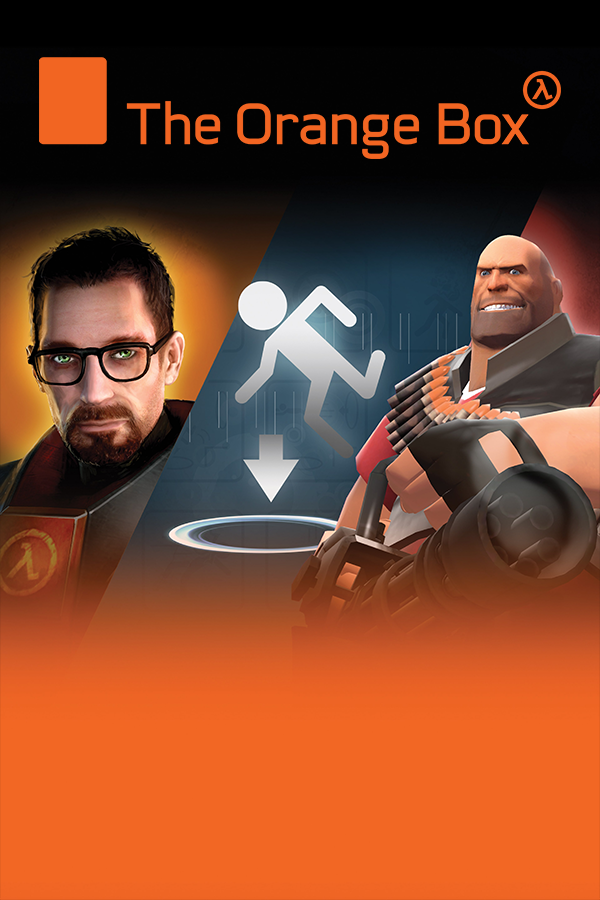

|  | |
| Playtime | Not Played |
| Last Activity | Never |
| Added | 4/27/2025 10:06:45 |
| Modified | 4/29/2025 9:14:29 |
| Completion Status | Not Played |
| Library | Playnite |
| Source | |
| Platform | Sony PlayStation 3 |
| Release Date | 10/10/2007 |
| Community Score | 96 |
| Critic Score | 94 |
| User Score | |
| Genre | Various |
| Developer | Valve |
| Publisher | Valve |
| Feature | Multiplayer Single Player |
| Links | Wikipedia Official website |
| Tag | [Game Engine] Source |
The Orange Box is a video game compilation containing five games developed and published by Valve. Two of the games included—Half-Life 2 and its first stand-alone expansion, Episode One—had previously been released in 2004 and 2006 as separate products. Three new games were also included in the compilation: the second stand-alone expansion, Half-Life 2: Episode Two; the puzzle game Portal; and Team Fortress 2, the multiplayer game sequel to Team Fortress Classic. Valve also released a soundtrack containing music from the games within the compilation. A separate product entitled The Black Box was planned, which would have included only the new games, but was later canceled.
The Orange Box was released for Windows and the Xbox 360 in October 2007, while the PlayStation 3 version, developed by EA UK and not Valve, was released in December 2007. A digital Orange Box pack, containing the five games, was released in May 2010 for Mac OS X following the release of Steam for the platform, while a similar version for Linux followed after the Steam's clients release for Linux in early 2013.
The Orange Box received widespread critical acclaim, with Portal being recognized as a surprise favorite of the package. The PlayStation 3 version of The Orange Box, however, was criticized for containing several technical shortcomings that were not present in the other versions, only a few of which were fixed through a single patch.
The Orange Box features five complete games compiled into one retail unit: Half-Life 2 and its two continuations, Episode One and Episode Two; Portal; and Team Fortress 2. All of these games use Valve's Source engine. At its launch the game was priced similar to other AAA video game releases of the era. With it costing $49.95 on PC and $59.95 on console in the United States.
Through the Steam platform for the Windows version, the games can collect and report in-depth data such as where the player's character died, completion time, and total victories in multiplayer modes. This data is compiled to generate gameplay statistics for Episode One, Episode Two, and Team Fortress 2.
Although Half-Life 2 has the largest proportion of Achievements, there are 99 spread across all five games, exceeding the 50-Achievement limit that Microsoft maintains to feature the most Achievements of any Xbox 360 product. These Achievements include killing a certain number of monsters, finding hidden weapon caches, or other tasks specific to each game.
All the games on The Orange Box except Half-Life 2 (on consoles and on PC prior to its 2024 20th anniversary update) contain in-game commentary that can be enabled, allowing the player to listen to the developers discuss the creation and purpose of particular sections and components of each game. This has been a feature of every Valve game since Half-Life 2: Lost Coast due to the commentary's popularity in that game, according to Erik Wolpaw, lead writer for Portal.
Half-Life 2 is a science fiction first-person shooter game and the sequel to Half-Life. While remaining similar in style to the original, Half-Life 2 introduces new concepts to the series such as physics-based puzzles and vehicle sections. The game takes place in the fictional City 17 and surrounding areas as the player takes on the role of scientist Gordon Freeman. Freeman is thrust into a dystopian environment in which the aftermath of the events of Half-Life have come to bear fully upon human society, and he is forced to fight against increasingly unfavorable odds in order to survive. In his struggle, he is joined by various acquaintances, including former Black Mesa colleagues, oppressed citizens of City 17, and the Vortigaunts, all of whom later prove to be valuable allies. Half-Life 2 received critical acclaim, including 35 Game of the Year awards, when it was originally released for Windows in 2004. As of December 3, 2008, over 6.5 million copies of Half-Life 2 have been sold at retail. Although Steam sales figures are unknown, their rate surpassed retail's in mid-2008 and they are significantly more profitable per-unit.
Half-Life 2: Episode One continues from the events of Half-Life 2. Building on the original, Episode One added cooperative play with friendly non-player characters such as Alyx Vance, whose new abilities complement Freeman's abilities and allow her to comprehend and respond to the player's actions by lending help. It is set immediately after the end of Half-Life 2 in the war-torn City 17 and nearby areas. Episode One follows scientist Gordon Freeman and his companion Alyx Vance as they continue to cope with the events chronicled in Half-Life 2 and humanity's continuing struggle against the Combine. The game was originally released in 2006 for Windows as a standalone game and was generally well received.
Half-Life 2: Episode Two was first of three original new games included as a part of The Orange Box and focuses on expansive environments, travel, and less linear play. In the game, Gordon Freeman and the series' other major characters move away from City 17 to the surrounding wilderness following the closing events of Episode One. The game was praised for its new environments and features and was well received by critics.
Portal is a single-player first-person action/puzzle game that was first available as a part of The Orange Box as one of its three original new games. The game consists primarily of a series of puzzles, solved by creating portals which the player and simple objects can pass through in order to reach an exit point, under the supervision of an AI-programmed robot named GLaDOS. The portal system and the unusual physics it creates are the emphasis of the game. Portal was a surprise favorite of The Orange Box, receiving widespread praise and several Game of the Year awards.
Team Fortress 2 is a multiplayer team-based first-person shooter that was first available as part of The Orange Box as one of its three original new games. The game is a sequel to the original Quake modification, Team Fortress, and Valve's Half-Life modification, Team Fortress Classic. Its focus is on two competing teams that attack each other in order to achieve varying objectives, including capturing control points or defending them from attack, or capturing a flag. Players can choose to play as one of nine classes in these teams, each with different strengths and weaknesses. Unlike most other Source-powered games, Team Fortress 2 features a cartoon art style and non-realistic graphics. Team Fortress 2 was very well received by critics; it was particularly praised for its unique artistic direction and graphics. In June 2011, the Steam version of Team Fortress 2 became free-to-play.
Valve planned on releasing an additional compilation for Windows entitled The Black Box, which would have contained only the three new games released as a part of the Orange Box—Half-Life 2: Episode Two, Portal, and Team Fortress 2. The Black Box was later cancelled for retail and only made available through Steam exclusively to owners of certain ATI graphics cards, who received a voucher for a free copy of The Black Box.
During development, the simultaneous release of two game compilation packages with different content combinations was touted by Valve as a new direction for the game industry. Gabe Newell, co-founder of Valve, said, "The Black Box and The Orange Box represent a new approach to publishing multiple products on multiple platforms." After first discontinuing The Black Box, however, Valve released all the new material for individual download via Steam.
The Black Box was to be priced US$10 lower than The Orange Box which would have made it $39.95 on PC and $49.95 on console in the U.S. if it used The Orange Box launch price as a baseline. To compensate for the cancellation of The Black Box, Valve offered gift subscriptions to Steam users who had previously purchased Half-Life 2 or Half-Life 2: Episode One and then purchased The Orange Box so that they could give their second copies of those two games as gifts to people added to their Steam Friends list. Still, the cancellation of The Black Box sparked complaints from game critics and consumers alike, unhappy that they were obliged to pay for games that they already owned. It also raised concerns among those who had bought the ATI Radeon HD 2900 XT graphics card, which came with a voucher for The Black Box, but Valve clarified that only the retail version of The Black Box had been cancelled. While Valve never expressed its reasons for this decision, industry writers speculated that it might have been to increase profits on retail copies or to avoid customer confusion between similar game packages and their availability across the platforms.
While the Windows and Xbox 360 versions of The Orange Box were developed and published by Valve, the development of the PlayStation 3 port was outsourced to the Electronic Arts studio EA UK. In an interview with Edge magazine before the game's release, Valve co-founder Gabe Newell commented, "I think the people who have The Orange Box on the PS3 are going to be happy with their game experience. We've done the PC and 360 versions here and EA has a team doing the PS3 version – and they'll make the PS3 version a good product; EA got the job done in putting a lot of people with PS3 experience on the project. But I think it's harder to get it to the same standard as the 360 and PC versions". Despite this, he noted that Valve will probably handle PlayStation 3 versions of its products in the future.
In a preview of The Orange Box in November 2007, 1UP.com revealed numerous problems with the late beta build of EA's PlayStation 3 version of The Orange Box, citing pervasive frame rate issues which, they claimed, "at best merely hinder gameplay and at worst make the experience downright unplayable." IGN's Hilary Goldstein disagreed, writing that although EA "is one of the worst offenders when it comes to porting games to the PS3," the frame rate issues were not bad enough "to make me throw my controller in disgust."
On January 3, 2008, IGN reported that Valve employees had created a thread on Valve's website forums for players to list the problems they had encountered and to suggest fixes, which caused speculation that a patch was being planned to address the issues in the PlayStation 3 version, such as the frame rate issues, the connection problems in Team Fortress 2, and the slow loading times in Portal. A patch for the PlayStation 3 version was later released in North America on March 19, 2008, and in Europe a short while after that; however, it made no mention of fixing frame rate issues or slow loading times.
Valve deactivated accounts with CD keys that were purchased outside of the consumer's territory in order to maintain the integrity of region-specific licensing. This generated complaints from North American customers who had circumvented their Steam end-user license agreement by purchasing The Orange Box through cheaper, Asian retailers. Some customers who then purchased the game a second time from a local vendor experienced difficulty adding the new CD key to their accounts in order to activate their newly purchased games and also had trouble communicating with Steam's customer support team about this problem. Doug Lombardi of Valve stated, "Some of these users have subsequently purchased a legal copy after realizing the issue and were having difficulty removing the illegitimate keys from their Steam accounts. Anyone having this problem should contact Steam Support to have the Thai key removed from their Steam account."
The German version of The Orange Box is set to a low violence mode in order to comply with German laws regulating the sale of violent video games. Blood effects are replaced by sparks and bullet wounds are replaced with dents as if the characters were metal robots. Additionally in Team Fortress 2, instead of body parts being scattered after a player's character is blown apart, various items such as hamburgers, coils, rubber ducks, and Chattery Teeth appear (known as "sillygibs" by the community). Characters from different classes leave different items and different ratios of these items when killed by explosives. In the Half-Life games, bodies fade away after the death of non-player characters and the blood has been altered to a gray color.
The soundtrack for The Orange Box consists of music that Valve employees composed for Half-Life 2: Episode One, Half-Life 2: Episode Two, Portal, and Team Fortress 2. It also includes the original version and an exclusive remix of "Still Alive", both by Jonathan Coulton. It was released on December 21, 2007, and is sold by the official Valve Store, Amazon.com, and digital music services such as iTunes, Napster, and eMusic. A more-complete version of this soundtrack that also includes music files from Half-Life and Half-Life 2 was released on Steam as part of the Audiosurf package. "Still Alive" was subsequently released as a free downloadable song for the rhythm game Rock Band on March 31, 2008.
Pre-purchasing of the Windows version on Steam began on September 11, 2007. Those who pre-purchased via this method received a ten-percent discount and were able to play the Team Fortress 2 beta starting on September 17, 2007. The original PC version of The Orange Box came with Peggle Extreme, a ten-level playable demo of Peggle Deluxe, which contained levels with graphical themes of games contained in The Orange Box. However Peggle Extreme was later made free to download for anyone with a Steam account and is not included in the current PC version of the Orange Box on Steam. Half-Life 2: Lost Coast is also technically included with the PC version of The Orange Box, as it was offered as a free download to all owners of Half-Life 2. And as of 2024 is listed as a part of the Orange Box after Lost Coast and Half-Life 2 Episodes One, and Two were integrated into Half-Life 2 as a part of its 20th anniversary update. The same is true for Half-Life 2: Deathmatch, which was now included with Half-Life 2 following Half-Life 2's 20th anniversary update.
The Orange Box was met with universal acclaim from reviewers. The averaging website GameRankings cites both the Xbox 360 version and the PC version as the highest-rated game of their respective platforms. AllGame editor Mark Hoogland called The Orange Box "the gold standard for bundled (video) games". IGN described The Orange Box as "the best deal in video game history," and awarded both the Windows and Xbox 360 versions with an Editors' Choice Award. All three versions won GameSpot's Editors' Choice Award. Approximately 3 million copies of The Orange Box were sold by the end of November 2008.
Portal was singled out for praise by reviewers. Official Xbox Magazine admired its unique puzzle gameplay mechanics, stating that it was the first major advance in puzzle gaming "since Russians started dropping blocks", referring to Tetris. The Escapist's Ben "Yahtzee" Croshaw stated in his Zero Punctuation review that he could not think of any criticism for Portal, saying that it had "some of the funniest pitch-black humor [he had] ever heard in a game" and concluded that it is "absolutely sublime from start to finish."
The PlayStation 3 version's critical review scores suffered because of the technical issues first uncovered by 1UP.com. While discussing the retail version on a podcast, 1UP.com staff members agreed that a significant number of the frame rate problems had been resolved, but not all of them. They concluded that the PlayStation 3 version was not quite as smooth as the Xbox 360 version and recommended that "if you own both [consoles], you should do the 360" version. Kotaku's Michael McWhertor echoed that recommendation, though stated that those who only have a PlayStation 3 should still consider The Orange Box.
While frame rate issues were the main complaint, the PlayStation 3 version was also criticized for unreliable voice chat and excessive network delay or lag in Team Fortress 2, as well as long load times generally. It was, however, praised for featuring anti-aliasing and a quick-save feature, neither of which were present in the Xbox 360 version (but were present in the PC version). After release, the game received further criticism from fans for the lack of surround sound support when using an optical cable. An open letter to Valve, asking them to put pressure on EA to release a fix was posted to the Steam forum. A response was posted by a Valve employee going by the name of "BurtonJ", directing disappointed customers to a dedicated thread on the subject.
The Orange Box won a number of awards for its overall high standard and use of technology. The compilation won "Computer Game of the Year" at the Academy of Interactive Arts & Sciences' 11th Annual Interactive Achievement Awards; it also received nominations in the "Overall Game of the Year", "Action Game of the Year", and "Outstanding Innovation in Gaming" categories. The Orange Box won the "Breakthrough Technology Award" and the "Best PC Game Award" at the 2007 Spike Video Game Awards, and was additionally nominated in the "Game of the Year", "Best Shooter", "Best Xbox 360 Game", and "Best Multiplayer Game" categories. It was also named the second-best video game of 2007 by Time Magazine, while the PlayStation 3 version was nominated in the category of Action and Adventure at the BAFTA Video Games Awards. Valve also received developer awards for their work on The Orange Box. The Orange Box received 17 Game of the Year awards and over 100 awards in total. The Orange Box was placed as the 22nd most influential video game in history by the Guinness World Records Gamer's Edition, 2009.
Portal won "Outstanding Achievement in Game Design", "Outstanding Achievement in Gameplay Engineering", and "Outstanding Character Performance" for Ellen McLain's vocal portrayal of GLaDOS at the 11th Annual Interactive Achievement Awards. The game won 76 awards, including 37 Game of the Year awards, and was recognized for innovative design and game mechanics. The dark humor of Portal and the ending music track "Still Alive" were also singled out for awards.
Team Fortress 2 was nominated in the categories of "Outstanding Achievement in Art Direction" and "Outstanding Achievement in Animation" at the 11th Annual Interactive Achievement Awards. Although unsuccessful at the IAA, the game did receive 10 awards, including five Game of the Year awards, and other awards for its artistic direction and multiplayer gameplay.
Half-Life 2: Episode Two won four awards, including one Game of the Year award, and was recognized for excellent NPC AI, level design, and story.